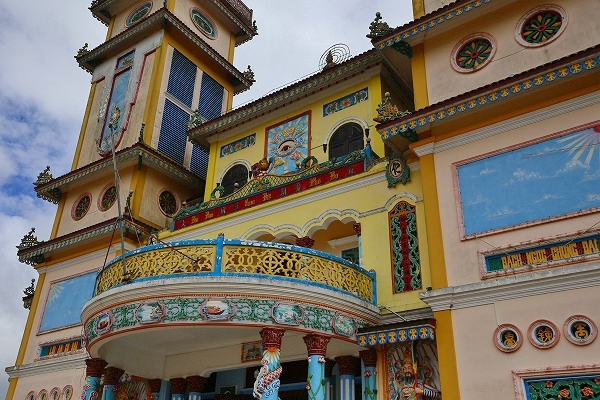

霊福寺を参拝しているとき、山の向こうに
奇妙な塔が見えた。
教会のようなお寺のような…
そうか。
カオダイ教の教会か。
カオダイ教とはベトナム南部で広く信仰されている新興宗教で、
儒教、仏教、道教、キリスト教、イスラム教の5つの宗教をミックスさせた摩訶不思議な宗教である。
以前
総本山へ行った事はあるが、そのダラット支部ということになるのだろう。
折角なので行ってみることにした。
門を潜って最初に現れるのは単塔の建物。
中にお邪魔すると尼さんが一人でお経を唱えていた。
どうやら僧院のようだ。
孫悟空のイラストが描かれていた。
まあ、あの方も道教の神様ですから…。
僧院を裏から見るとこんな感じ。
裏から見ると結構中華風なんですね。
というわけで丘の上の本堂に向かう。
ノートルダム大聖堂を思わせるような双塔の建物。
大きさは違えど、
タイニンにある総本山の建物とそっくり。

装飾やディテールも本山のモノとよく似ている。
バルコニーの上にある目のマークこそがこの教団のシンボルだ。
正面が開いていたので中へお邪魔する。
丁度正午の礼拝の時間だった。
2階のテラスから見物させてもらう。
総本山のそれと比べると人数も少なく、略式ではあったが、他に見物客もいない空間でゆったりじっくり見させてもらいましたよ。
礼拝が終わったので本尊である
聖眼を近くで見させてもらう。
聖眼とは神様の眼で、教祖が修行中に見たのだという。
総本山で見学した際には結構禁止事項が多く、特に建物の中心線に立ち入る事は禁じられていた。
しかしここでは特に厳しく言われることもなく、正面行って撮影していいすか？と聞くと「オッケーオッケー」てな具合。
かえって総本山より見学しやすかったよ。
龍の巻き付いた柱の上は空をイメージした天井。
あらゆる文化を飲み込んだカオダイ教はある意味ベトナムという国のアイデンティティを象徴しているように思える。
いや、逆に言えばカオダイ教という宗教が生まれてきたのはベトナムの辿ってきた歴史的土壌があったからなのかも知れない。
欄間には儒仏道の神々と並んで
キリストがにっこり微笑んでいた。
本堂側面。
カオダイ教はフランス統治時代やインドシナ戦争期には様々な武力闘争もあったという。
いまではそんな歴史など感じさせない、派手でキッチュで楽し気な雰囲気に満ちている。
礼拝を終えて家路につく信者の方々。
総本山以上にじっくりと見物させてもらいまして、ありがとうございました。
次へGO！